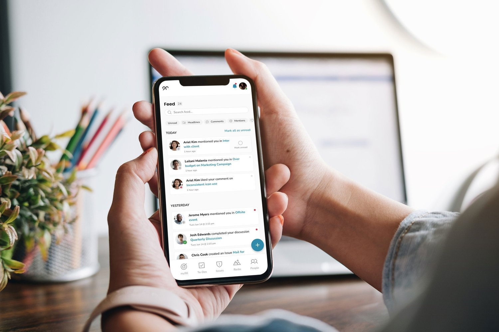
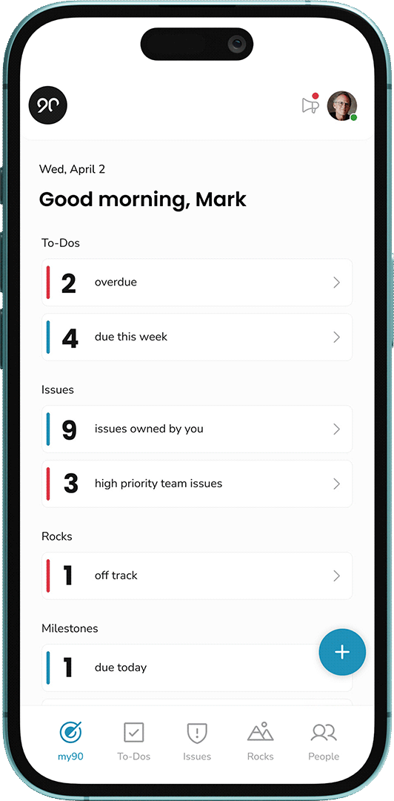

The design decision
Define the mobile experience around useful actions, rather than desktop feature parity.
Explore the mobile strategy ↓Overview
The product stopped at the desk.
Ninety teams used the desktop product to manage priorities, tasks, issues, and meetings. Customer feedback and usage data showed a gap: people needed to capture and respond to work while away from a computer.
I led discovery and design for the first mobile experience. Before deciding which screens to build, I needed to establish which jobs were worth bringing to a phone.
“I would like to say that this tool is outstanding. However, the lack of notifications and the mobile app are annoying… without an app, this software is not versatile.”
The opportunity was a focused companion to the desktop product: help people see what needs attention, respond to their team, and capture work when it happens.
The Problem
A smaller scope made mobile useful.
Desktop supported planning sessions and dense team workflows. Carrying that entire structure into the first mobile release would have competed with the short, task-focused sessions people described in research.
I worked with product and engineering to prioritize three jobs:
End-to-end product design
My Role
I led design for the app from discovery through ship, working with the Head of Product, two product managers, and the engineering team:
Discovery
Research shaped the release boundary.
I interviewed customers about working away from their desks and synthesized the sessions into two primary personas. Their different contexts helped us separate tasks that needed immediate access from work that could remain on desktop.
The two primary personas from discovery research. Click to view full size.
Those personas became a reference for scope discussions: whose task were we serving, where were they doing it, and what did they need to finish?
Design Strategy
An action-driven experience, not a dashboard on a phone
The app opens to what matters today: a personalized morning view of overdue and upcoming to-dos, issues, and rocks. The feed keeps users connected to team activity — mentions, comments, completions — and a persistent create action means capturing a to-do or raising an issue takes seconds from anywhere in the app.


Validate cheap, commit with confidence
Testing & Validation
I tested the core journeys through unmoderated usability studies and brought the findings back to product and engineering. We used them to choose an approach the team could resource, making the release boundary an explicit decision.
My responsibility continued through visual design and QA, including adapting Terra’s foundations for iOS and Android.
Outcomes & Recognition
The first release reached people beyond desktop.
The app shipped on iOS and Android and reached Apple’s Top 100 Business Apps. Within 90 days, mobile adoption reached 52% of active users—three times the expected rate.
Task completion and return use mattered alongside adoption. The app needed to support ongoing work after the first download, not only attract people to a new platform.
What this project taught me
Key Learnings
The hardest decisions were about what to leave on desktop. Research gave me a way to make those choices with the team: prioritize the work people needed to capture or resolve in the moment, then test whether they could finish it.
I would use the same approach for another platform expansion—define the role of the new experience before turning the existing feature list into a roadmap.